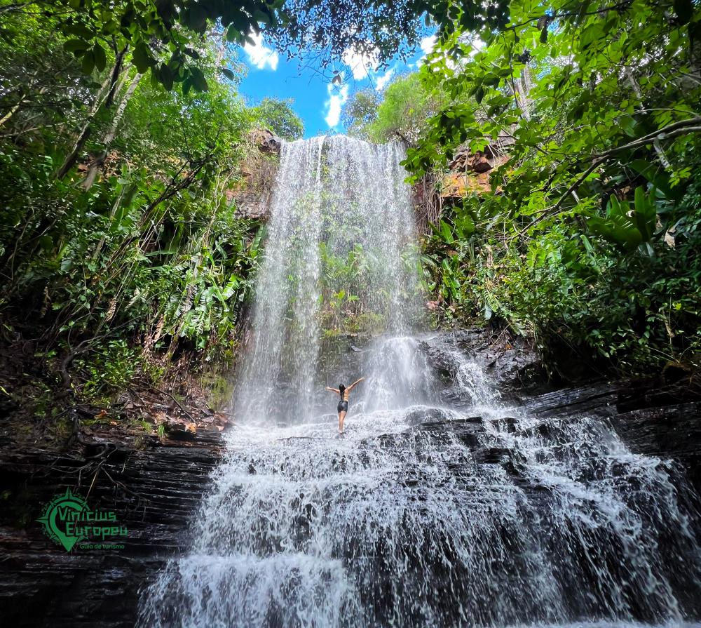

Lugares Imperdíveis


Cachoeira
Cachoeira do Urubu Rei
Uma verdadeira joia e beleza escondida em meio à mata fechada. Um cenário calmo e renovador para os aventureiros de plantão.

Cachoeira
Cachoeira do Tombador
Conta com uma queda d’água forte e revigorante, formando uma excelente piscina natural cercada por formações rochosas incríveis.